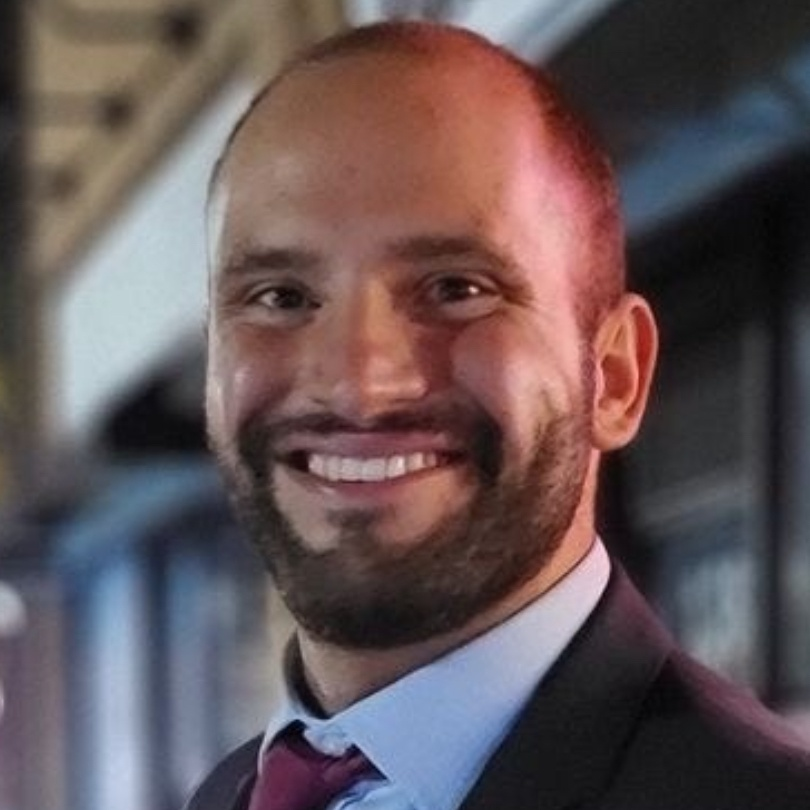

Gregory Kasin
Aspiring Trial Attorney · Data Privacy & Digital Civil Liberties
1L · USF School of Law · Class of 2028
San Francisco-based law student and aspiring litigator focused on data privacy, digital civil liberties, and the constitutional challenges posed by AI and emerging technologies. My background in tech and sustainability shapes how I think about corporate accountability and the human cost of unchecked technological power.
🌟 Summer 2026 — Legal Intern, Baker McKenzie Hanoi